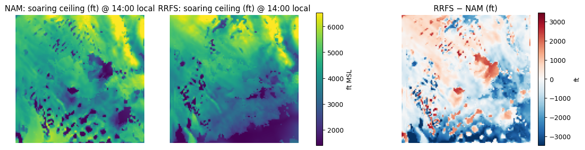
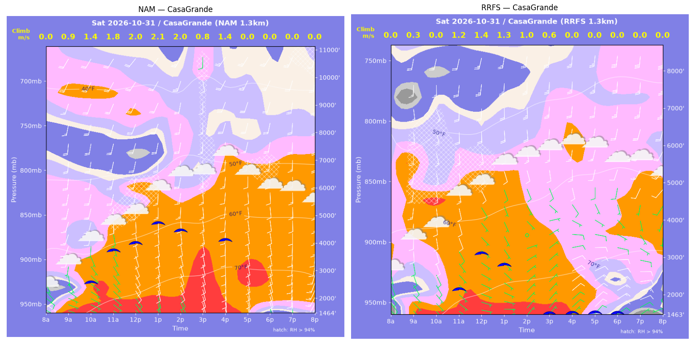
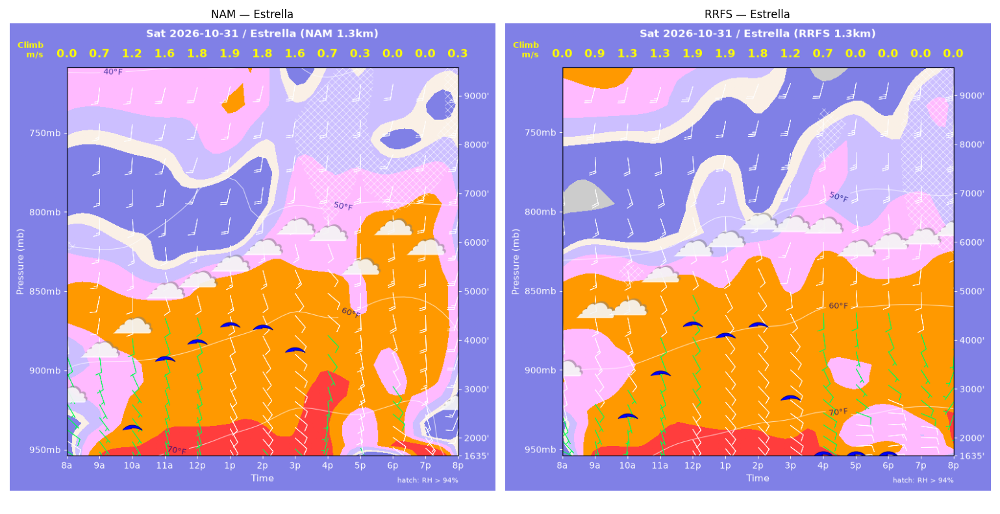
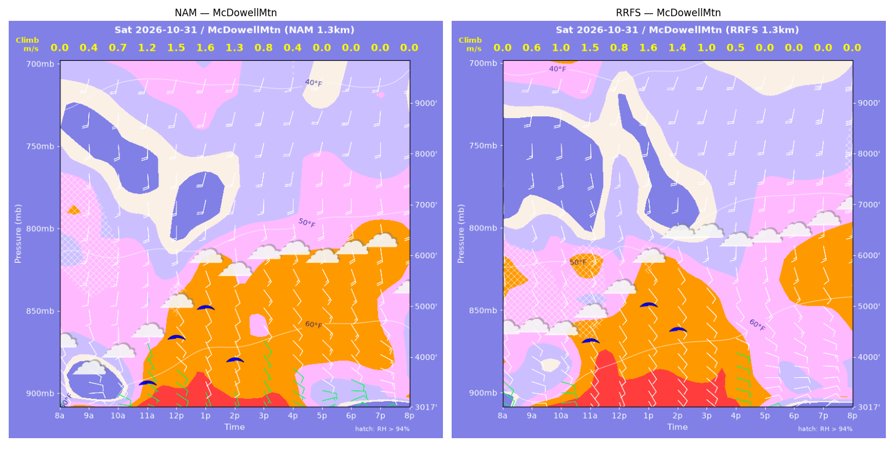
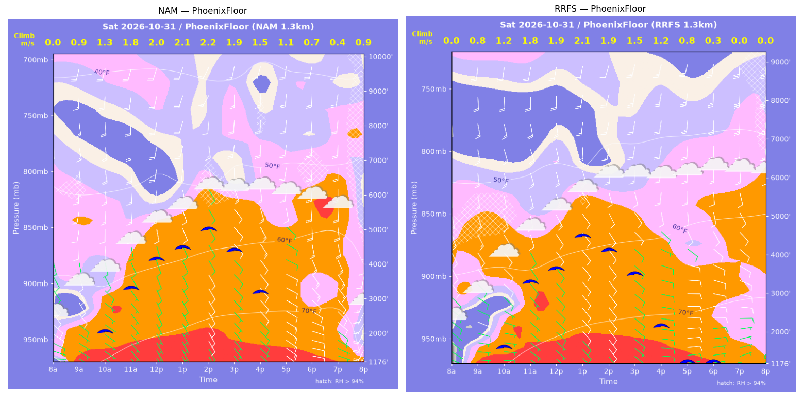
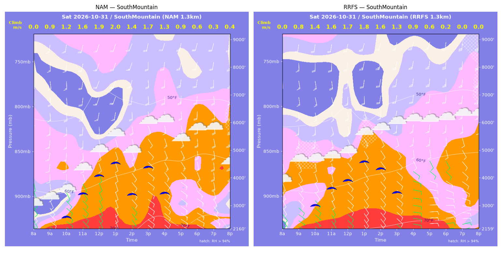
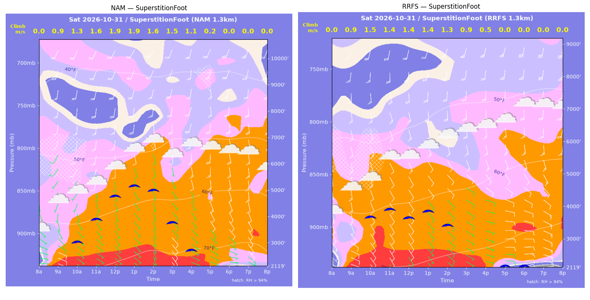
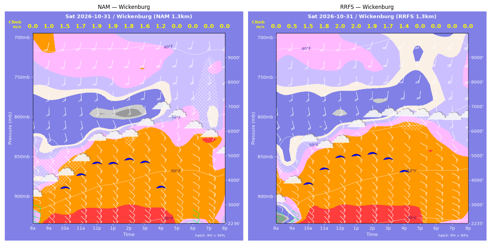

../runs/ab-phoenix-nam — model nam, cycle 2026-10-30 18z, dx 1.3333333740234374 km, 13 hours, grid 114×114../runs/ab-phoenix-rrfs — model rrfs, cycle 2026-10-30 18z, dx 1.3333333740234374 km, 13 hours, grid 114×114Grids identical; afternoon = 12:00–17:59 local (UTC-7). Δ = RRFS − NAM.
| Site | terrain ft | BL top (AGL) med|Δ| / bias (ft) | w* med|Δ| / bias (fpm) | Soaring ceiling med|Δ| / bias (ft) | BL wind speed med|Δ| / bias (kt) | BL wind dir med|Δ| / bias (deg) | 2 m temperature med|Δ| / bias (F) | Sfc LCL (AGL) med|Δ| / bias (ft) | Sensible heat flux med|Δ| / bias (W/m2) |
|---|---|---|---|---|---|---|---|---|---|
| PhoenixFloor | 1177 | 495 / -513 | 64 / -51 | 712 / -570 | 2 / -0 | 16 / -3 | 1 / -1 | 75 / -73 | 46 / -38 |
| SouthMountain | 2160 | 572 / +5 | 57 / -44 | 536 / -254 | 3 / -2 | 13 / -13 | 1 / -0 | 50 / +220 | 55 / -53 |
| SuperstitionFoot | 2120 | 1014 / -804 | 100 / -93 | 1219 / -1044 | 3 / +2 | 23 / -21 | 1 / -1 | 269 / -298 | 66 / -56 |
| Estrella | 1636 | 508 / -329 | 17 / -18 | 131 / -150 | 4 / -3 | 15 / -12 | 0 / -0 | 393 / +333 | 18 / -2 |
| Wickenburg | 2236 | 273 / +279 | 25 / +21 | 232 / +249 | 1 / -0 | 6 / -10 | 0 / +0 | 341 / +196 | 27 / +24 |
| CasaGrande | 1464 | 2370 / -2765 | 138 / -129 | 1406 / -1395 | 6 / -7 | 65 / -73 | 3 / -3 | 555 / -561 | 100 / -82 |
| McDowellMtn | 3017 | 562 / +439 | 18 / -10 | 11 / -145 | 1 / +0 | 13 / -6 | 0 / +0 | 301 / +292 | 7 / -15 |
| Metric | n | median |Δ| | p90 |Δ| | bias |
|---|---|---|---|---|
| BL top (AGL) (ft) | 42 | 601 | 1961 | -527 |
| w* (fpm) | 42 | 43 | 131 | -46 |
| Soaring ceiling (ft) | 42 | 322 | 1574 | -473 |
| BL wind speed (kt) | 42 | 3 | 6 | -2 |
| BL wind dir (deg) | 42 | 15 | 45 | -20 |
| 2 m temperature (F) | 42 | 1 | 2 | -1 |
| Sfc LCL (AGL) (ft) | 42 | 272 | 686 | +16 |
| Sensible heat flux (W/m2) | 42 | 33 | 98 | -32 |
diffmap_tol.png| local | BL top NAM/RRFS ft | w* NAM/RRFS fpm | ceiling NAM/RRFS ft | BL wind NAM/RRFS | T2 NAM/RRFS F | HFX NAM/RRFS |
|---|---|---|---|---|---|---|
| 08:00 | 0 / 0 | 0 / 0 | 1177 / 1176 | 3kt@088 / 2kt@091 | 67 / 64 | 0 / 0 |
| 09:00 | 1388 / 920 | 179 / 155 | 1177 / 1176 | 10kt@140 / 9kt@105 | 70 / 68 | 64 / 63 |
| 10:00 | 2269 / 1615 | 262 / 239 | 2113 / 1671 | 9kt@150 / 9kt@132 | 72 / 71 | 123 / 131 |
| 11:00 | 3691 / 3645 | 350 / 355 | 3351 / 3349 | 11kt@177 / 13kt@170 | 75 / 74 | 181 / 192 |
| 12:00 | 4652 / 4011 | 403 / 376 | 4166 / 3657 | 17kt@189 / 14kt@152 | 76 / 76 | 220 / 208 |
| 13:00 | 5007 / 5034 | 422 / 416 | 4471 / 4465 | 11kt@170 / 13kt@164 | 77 / 77 | 236 / 225 |
| 14:00 | 5713 / 4711 | 434 / 372 | 4984 / 4069 | 10kt@163 / 13kt@178 | 79 / 78 | 226 / 171 |
| 15:00 | 5185 / 4370 | 375 / 304 | 4378 / 3450 | 14kt@159 / 12kt@165 | 79 / 78 | 160 / 101 |
| 16:00 | 3895 / 3545 | 298 / 232 | 3160 / 2100 | 15kt@150 / 10kt@169 | 79 / 78 | 107 / 56 |
| 17:00 | 2844 / 2544 | 221 / 148 | 1177 / 1176 | 8kt@120 / 10kt@104 | 79 / 78 | 60 / 20 |
| 18:00 | 1568 / 1117 | 133 / 68 | 1177 / 1176 | 11kt@129 / 9kt@089 | 78 / 78 | 24 / 4 |
| 19:00 | 885 / 1187 | 83 / 0 | 1177 / 1176 | 8kt@123 / 8kt@089 | 78 / 78 | 10 / -0 |
| 20:00 | 876 / 663 | 182 / 0 | 1177 / 1176 | 19kt@215 / 5kt@096 | 71 / 77 | 107 / -0 |
| local | BL top NAM/RRFS ft | w* NAM/RRFS fpm | ceiling NAM/RRFS ft | BL wind NAM/RRFS | T2 NAM/RRFS F | HFX NAM/RRFS |
|---|---|---|---|---|---|---|
| 08:00 | 0 / 0 | 0 / 0 | 2160 / 2160 | 6kt@141 / 5kt@133 | 66 / 65 | 0 / 0 |
| 09:00 | 844 / 908 | 169 / 151 | 2160 / 2160 | 11kt@146 / 8kt@129 | 65 / 67 | 88 / 58 |
| 10:00 | 1473 / 2094 | 245 / 269 | 2668 / 3078 | 9kt@154 / 11kt@163 | 67 / 68 | 154 / 144 |
| 11:00 | 2475 / 2767 | 319 / 322 | 3511 / 3683 | 12kt@175 / 14kt@169 | 69 / 69 | 202 / 186 |
| 12:00 | 3231 / 3173 | 369 / 329 | 4133 / 3940 | 14kt@169 / 16kt@157 | 71 / 71 | 240 / 173 |
| 13:00 | 3747 / 4084 | 401 / 353 | 4562 / 4585 | 14kt@175 / 16kt@161 | 72 / 72 | 267 / 168 |
| 14:00 | 2762 / 3927 | 278 / 320 | 3434 / 4312 | 15kt@157 / 13kt@169 | 71 / 72 | 120 / 130 |
| 15:00 | 4014 / 3208 | 325 / 259 | 4392 / 3449 | 15kt@173 / 12kt@166 | 74 / 73 | 133 / 84 |
| 16:00 | 3079 / 2169 | 263 / 180 | 3450 / 2160 | 16kt@163 / 8kt@122 | 74 / 73 | 92 / 42 |
| 17:00 | 1229 / 1532 | 180 / 111 | 2160 / 2160 | 12kt@124 / 9kt@110 | 72 / 73 | 73 / 14 |
| 18:00 | 1151 / 784 | 118 / 46 | 2160 / 2160 | 15kt@125 / 10kt@088 | 73 / 73 | 22 / 2 |
| 19:00 | 457 / 1181 | 68 / 0 | 2160 / 2160 | 13kt@126 / 11kt@106 | 73 / 73 | 11 / -3 |
| 20:00 | 251 / 262 | 69 / 0 | 2160 / 2160 | 4kt@130 / 4kt@057 | 70 / 73 | 20 / -0 |
| local | BL top NAM/RRFS ft | w* NAM/RRFS fpm | ceiling NAM/RRFS ft | BL wind NAM/RRFS | T2 NAM/RRFS F | HFX NAM/RRFS |
|---|---|---|---|---|---|---|
| 08:00 | 0 / 0 | 0 / 0 | 2120 / 2120 | 5kt@083 / 8kt@107 | 64 / 65 | 0 / 0 |
| 09:00 | 1307 / 1206 | 180 / 179 | 2120 / 2120 | 7kt@152 / 13kt@147 | 69 / 69 | 67 / 72 |
| 10:00 | 2344 / 3224 | 262 / 291 | 3091 / 3713 | 6kt@201 / 14kt@163 | 70 / 71 | 116 / 117 |
| 11:00 | 3303 / 3917 | 323 / 281 | 3946 / 3956 | 10kt@196 / 12kt@158 | 72 / 72 | 155 / 86 |
| 12:00 | 4387 / 3474 | 367 / 273 | 4792 / 3674 | 14kt@188 / 16kt@161 | 73 / 72 | 172 / 89 |
| 13:00 | 4884 / 3769 | 382 / 277 | 5169 / 3849 | 17kt@180 / 17kt@161 | 74 / 73 | 175 / 86 |
| 14:00 | 5421 / 3589 | 308 / 247 | 4984 / 3395 | 14kt@176 / 16kt@165 | 75 / 74 | 82 / 64 |
| 15:00 | 3220 / 3116 | 298 / 183 | 3755 / 2120 | 5kt@151 / 14kt@159 | 75 / 74 | 125 / 29 |
| 16:00 | 3283 / 2156 | 226 / 90 | 2720 / 2120 | 12kt@165 / 9kt@119 | 75 / 74 | 53 / 5 |
| 17:00 | 1129 / 1398 | 43 / 0 | 2120 / 2120 | 7kt@134 / 10kt@101 | 74 / 73 | 0 / -3 |
| 18:00 | 763 / 1470 | 0 / 0 | 2120 / 2120 | 8kt@127 / 12kt@105 | 72 / 73 | -5 / -13 |
| 19:00 | 1212 / 1355 | 0 / 0 | 2120 / 2120 | 11kt@150 / 14kt@116 | 74 / 74 | -5 / -20 |
| 20:00 | 2063 / 1030 | 0 / 0 | 2120 / 2120 | 15kt@143 / 13kt@138 | 73 / 74 | -7 / -26 |
| local | BL top NAM/RRFS ft | w* NAM/RRFS fpm | ceiling NAM/RRFS ft | BL wind NAM/RRFS | T2 NAM/RRFS F | HFX NAM/RRFS |
|---|---|---|---|---|---|---|
| 08:00 | 0 / 0 | 0 / 0 | 1636 / 1636 | 6kt@133 / 3kt@093 | 64 / 64 | 0 / 0 |
| 09:00 | 988 / 1706 | 145 / 185 | 1636 / 1636 | 7kt@155 / 11kt@149 | 69 / 69 | 46 / 57 |
| 10:00 | 2104 / 2153 | 240 / 259 | 2293 / 2504 | 8kt@169 / 12kt@153 | 71 / 70 | 99 / 124 |
| 11:00 | 3693 / 4066 | 323 / 266 | 3679 / 3370 | 12kt@169 / 14kt@159 | 72 / 72 | 139 / 71 |
| 12:00 | 3935 / 4321 | 359 / 383 | 4000 / 4337 | 12kt@180 / 12kt@165 | 73 / 74 | 180 / 202 |
| 13:00 | 4359 / 3924 | 374 / 380 | 4323 / 4076 | 16kt@184 / 11kt@167 | 75 / 75 | 184 / 217 |
| 14:00 | 4373 / 4490 | 359 / 348 | 4259 / 4275 | 16kt@176 / 11kt@172 | 76 / 76 | 161 / 146 |
| 15:00 | 4046 / 3466 | 310 / 242 | 3783 / 2776 | 14kt@167 / 10kt@183 | 77 / 76 | 112 / 64 |
| 16:00 | 4086 / 1880 | 140 / 132 | 1636 / 1636 | 11kt@169 / 8kt@167 | 76 / 76 | 9 / 19 |
| 17:00 | 203 / 946 | 50 / 0 | 1636 / 1636 | 9kt@157 / 9kt@106 | 74 / 74 | 8 / -2 |
| 18:00 | 1150 / 1092 | 0 / 0 | 1636 / 1636 | 9kt@137 / 10kt@106 | 74 / 74 | -10 / -9 |
| 19:00 | 589 / 920 | 0 / 0 | 1636 / 1636 | 14kt@157 / 9kt@109 | 74 / 74 | -7 / -6 |
| 20:00 | 231 / 805 | 56 / 0 | 1636 / 1636 | 12kt@172 / 4kt@184 | 67 / 74 | 10 / -3 |
| local | BL top NAM/RRFS ft | w* NAM/RRFS fpm | ceiling NAM/RRFS ft | BL wind NAM/RRFS | T2 NAM/RRFS F | HFX NAM/RRFS |
|---|---|---|---|---|---|---|
| 08:00 | 0 / 0 | 0 / 0 | 2236 / 2236 | 8kt@108 / 1kt@292 | 61 / 58 | 0 / 0 |
| 09:00 | 1841 / 428 | 196 / 106 | 2236 / 2236 | 14kt@126 / 5kt@117 | 65 / 63 | 60 / 42 |
| 10:00 | 3074 / 3272 | 289 / 299 | 3741 / 3905 | 14kt@150 / 16kt@142 | 67 / 68 | 117 / 123 |
| 11:00 | 3539 / 3782 | 338 / 359 | 4271 / 4504 | 16kt@161 / 17kt@150 | 69 / 69 | 164 / 185 |
| 12:00 | 4075 / 4306 | 369 / 395 | 4725 / 4976 | 15kt@155 / 17kt@147 | 70 / 70 | 184 / 219 |
| 13:00 | 4030 / 4345 | 369 / 396 | 4699 / 5005 | 14kt@156 / 16kt@141 | 71 / 72 | 187 / 219 |
| 14:00 | 4347 / 4519 | 359 / 383 | 4846 / 5059 | 14kt@150 / 13kt@146 | 72 / 72 | 159 / 189 |
| 15:00 | 4477 / 4474 | 324 / 341 | 4715 / 4824 | 14kt@149 / 14kt@146 | 72 / 73 | 112 / 135 |
| 16:00 | 4298 / 4632 | 244 / 273 | 3700 / 4318 | 15kt@160 / 15kt@158 | 73 / 73 | 49 / 67 |
| 17:00 | 3728 / 4351 | 0 / 0 | 2236 / 2236 | 15kt@161 / 11kt@131 | 72 / 72 | -5 / -1 |
| 18:00 | 1384 / 3628 | 0 / 0 | 2236 / 2236 | 10kt@124 / 12kt@135 | 69 / 71 | -3 / -7 |
| 19:00 | 2635 / 2676 | 0 / 0 | 2236 / 2236 | 15kt@127 / 13kt@137 | 70 / 71 | -7 / -5 |
| 20:00 | 1432 / 1968 | 0 / 0 | 2236 / 2236 | 15kt@122 / 14kt@132 | 68 / 70 | -4 / -6 |
| local | BL top NAM/RRFS ft | w* NAM/RRFS fpm | ceiling NAM/RRFS ft | BL wind NAM/RRFS | T2 NAM/RRFS F | HFX NAM/RRFS |
|---|---|---|---|---|---|---|
| 08:00 | 0 / 0 | 0 / 0 | 1464 / 1464 | 5kt@109 / 3kt@119 | 65 / 65 | 0 / 0 |
| 09:00 | 977 / 585 | 172 / 53 | 1464 / 1464 | 6kt@148 / 6kt@138 | 69 / 69 | 79 / 4 |
| 10:00 | 2508 / 457 | 278 / 0 | 2623 / 1464 | 8kt@184 / 5kt@141 | 73 / 70 | 132 / -1 |
| 11:00 | 3872 / 2451 | 356 / 238 | 3775 / 2207 | 17kt@188 / 11kt@165 | 75 / 74 | 180 / 85 |
| 12:00 | 4048 / 3744 | 390 / 272 | 4021 / 3129 | 16kt@194 / 13kt@162 | 76 / 75 | 227 / 83 |
| 13:00 | 5020 / 3592 | 409 / 251 | 4717 / 2797 | 18kt@181 / 11kt@164 | 78 / 76 | 212 / 68 |
| 14:00 | 4723 / 2747 | 385 / 194 | 4424 / 1464 | 20kt@192 / 5kt@151 | 79 / 76 | 187 / 42 |
| 15:00 | 4984 / 2220 | 155 / 126 | 1464 / 1464 | 14kt@173 / 5kt@083 | 79 / 76 | 11 / 14 |
| 16:00 | 5699 / 749 | 276 / 0 | 4063 / 1464 | 15kt@185 / 9kt@054 | 80 / 76 | 56 / -1 |
| 17:00 | 6359 / 1191 | 0 / 0 | 1464 / 1464 | 17kt@194 / 12kt@065 | 79 / 74 | -1 / -6 |
| 18:00 | 887 / 948 | 0 / 0 | 1464 / 1464 | 10kt@165 / 13kt@064 | 77 / 73 | -1 / -7 |
| 19:00 | 1302 / 683 | 0 / 0 | 1464 / 1464 | 11kt@186 / 13kt@075 | 77 / 72 | -4 / -2 |
| 20:00 | 1532 / 117 | 0 / 0 | 1464 / 1464 | 12kt@190 / 3kt@246 | 76 / 71 | -6 / -4 |
| local | BL top NAM/RRFS ft | w* NAM/RRFS fpm | ceiling NAM/RRFS ft | BL wind NAM/RRFS | T2 NAM/RRFS F | HFX NAM/RRFS |
|---|---|---|---|---|---|---|
| 08:00 | 0 / 0 | 0 / 0 | 3017 / 3017 | 8kt@125 / 5kt@112 | 64 / 61 | 0 / 0 |
| 09:00 | 419 / 633 | 88 / 126 | 3017 / 3017 | 8kt@085 / 11kt@108 | 61 / 62 | 22 / 46 |
| 10:00 | 532 / 1056 | 128 / 188 | 3017 / 3017 | 9kt@139 / 13kt@144 | 62 / 63 | 56 / 92 |
| 11:00 | 1891 / 2823 | 237 / 287 | 3579 / 4387 | 12kt@182 / 15kt@158 | 65 / 66 | 101 / 124 |
| 12:00 | 2914 / 2531 | 290 / 158 | 4452 / 3017 | 16kt@168 / 13kt@156 | 67 / 66 | 120 / 22 |
| 13:00 | 3746 / 3725 | 311 / 316 | 5014 / 5036 | 15kt@181 / 16kt@159 | 68 / 68 | 114 / 125 |
| 14:00 | 2520 / 3474 | 254 / 269 | 3988 / 4532 | 11kt@159 / 15kt@173 | 68 / 69 | 91 / 81 |
| 15:00 | 1882 / 2921 | 161 / 192 | 3017 / 3017 | 12kt@145 / 12kt@154 | 68 / 68 | 29 / 34 |
| 16:00 | 988 / 1728 | 82 / 104 | 3017 / 3017 | 10kt@137 / 10kt@128 | 68 / 68 | 5 / 8 |
| 17:00 | 992 / 1295 | 0 / 0 | 3017 / 3017 | 12kt@137 / 12kt@122 | 67 / 67 | -2 / -4 |
| 18:00 | 563 / 914 | 0 / 0 | 3017 / 3017 | 8kt@113 / 11kt@098 | 66 / 67 | -3 / -5 |
| 19:00 | 1115 / 921 | 0 / 0 | 3017 / 3017 | 14kt@118 / 12kt@093 | 66 / 67 | -4 / -6 |
| 20:00 | 1273 / 971 | 0 / 0 | 3017 / 3017 | 16kt@136 / 13kt@110 | 65 / 67 | -4 / -3 |
montage_PhoenixFloor.pngmontage_SouthMountain.pngmontage_SuperstitionFoot.pngmontage_Estrella.pngmontage_Wickenburg.pngmontage_CasaGrande.pngmontage_McDowellMtn.png